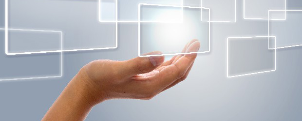

新年ということもあり今回から新しいシリーズを設けることになりました。
題して「手放そう 子育ての思いこみ」！
マァ、この仕事（塾の先生）を長くやっていると子を持つ親の皆さんの様々な悩みと接する機会は多い。
昔から親の悩みは尽きません。
悩みは多種多様でありながらその実昔から変わらないものもあり、また今の時代特有のものもあります。
それら一つひとつに答えていくのが親切なのかも知れませんが、私としてはその前にまず親自身「間違った思いこみ」を解きほぐすことの方が大切ではないかと感じています。
間違った思いこみとは社会常識や価値観、それから自分自身が親から刷り込まれた考え方や経験と記憶から出来上がっているものです。
ちょっと今思いついたことで言えば、幼い頃犬にかまれた人は大人になってからも犬が危険な動物にしか思えず、犬を見ただけで冷や汗が出たり震えが起こったりします。
犬が可愛いペットだとはとうてい思えないわけです。恐怖の対象でしかない。
マァ、犬が好きになれない位ならどうということはありませんがすべての犬＝悪ということになったら現実をゆがめていることになります。
犬の話は1つの例に過ぎません。
しかし、子育てに関しても親の側に強い思いこみがあると本来悩まなくてもよいことを悩んだり、ひいては子どもの現実をゆがめてしまうことさえあります。
そんな親の「思いこみ」に気づいてもらうための「手放そう思いこみシリーズ」というわけです。
子どもは誰のものか？
で、第1回目のお題は「子どもは誰のものか」です。
子どもは一体誰の者でしょうか？
輝かしい第1回のテーマにこれを選んだのは他でもありません。
最近よく感じるのは「昔に比べて今の親は我が子を抱え込む傾向がある」からです。
抱え込む（囲い込む）、つまり子どもを自分のモノと思い込むということです。
母親が100人いたら95人は我が子を自分の子だと思っているのではないでしょうか。
えーっ！！ 自分の子を我が子だと思って何が悪いの～ 当たり前でしょ（怒）
というのが普通の親の感覚ではないでしょうか。
親―特に母親は―お腹を痛めて産んだ我が子ですから可愛い。
いつくしんで育てたい。それは本能的な愛着であり、時には自分を犠牲にしても子に尽くす母性であってそれは必要なことですし、美しい親のあり方だと私も思います。
また子どもは家族の絆を強め、親もまた子育てを通して親として成長し喜びも感じる。
だから子どもは「私の子」であり「ウチの子」であるわけですが、そういう個人的属性の他に子どもには「社会的存在」という側面もあることを忘れてはならないと思います。
将来地域社会や国を支えていく役割も担っているわけです。
ですから子育てをするということは、将来国を支える人材を育てている意識がどこかにないといけないと思うのです。
親：そんな立派な意識なんかありません！！
私：そんな立派な意識というか高尚な思いを持てと強制するのではありません。
しかし子どもを丸ごと自分のモノという所有意識はどうなのかと言いたいのです。
いつかは「社会にお返しする」という気持ちを心のどこかに常に置いておいて欲しいかな…と。
親：分かっています。偉そうに言われなくても。
だからこそ高い授業料払って塾にも通わせているんじゃないですか。
子どもに良い学校に行ってもらって立派な社会人に育てようとしてるんです。
私：う～ん。それは少し親のエゴも入っているかな…。
マァ、いまの対話はうまくかみ合っていませんでしたが(笑)、子どもが社会的存在でもあることをこの機会に再認識して頂けたらと思います。
子どもは「自分の子」であると同時に「社会のもの」でもあるという事実ですね。
今週の教訓
子どもとの距離感、スタンスが少し変わりもっと冷静に子どもを見つめることができるはずです。
今週のつぶやき
マァ、子どもを抱え込むなとか所有物扱いするなと言うのは易しいけど現実は難しいですね…。昔は、地域（共同体）全体で子どもを育てようという気風がありましたが今は社会にそんな余裕はない。
何かあるとマスコミや世間はすぐに親をバッシングするし…。
親も批判を恐れて「自分の育て方が間違っていないか」と常に脅え、子どもに常識的レールの上だけを歩かそうとする。
結果ますます子どもを抱え込む。悪循環ですね。
子どもの方も「安全策」ばかりとらされ冒険しなくなり自立が遅れる。
困った…。
いや、だからこそ。こんな時代だからこそ子どもを守ろうと抱えるのではなく、批判や世間の眼を気にせず子どもに冒険させたい。
少なくとも自分の頭で考える子に育てたい。
大きな夢を描ける子にしたい。そう思います。